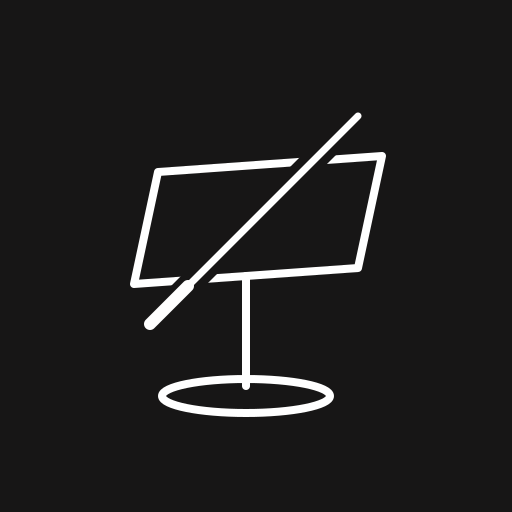
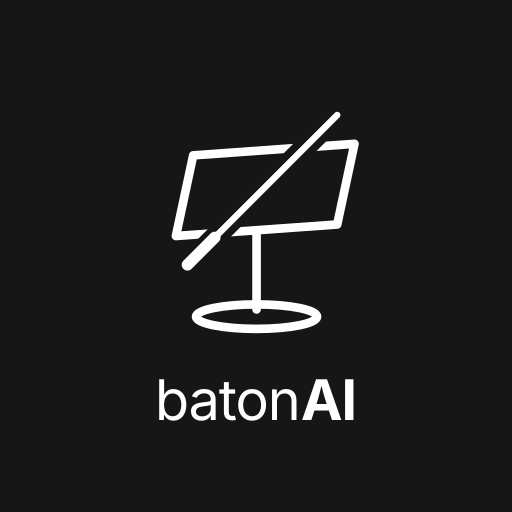
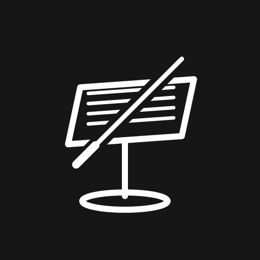
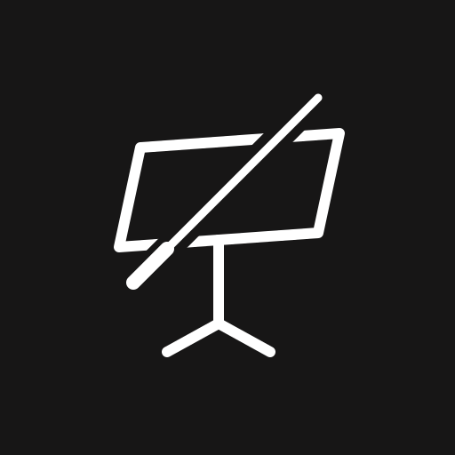

Ronda 1 (01–06) + ronda 2 (07–12). SVG vectorial, blanco sobre #171616.
Perspectiva ligera, base elíptica y batuta con mango. La más equilibrada.
Borde inferior engrosado: sugiere la repisa donde apoya la partitura.
Pie en T. La más limpia y la que mejor aguanta 16 px.

Trazo de 8 px: más elegante en gran formato, más frágil en pequeño.
Atril en negativo dentro de cuadrado redondeado. App y favicon.

Símbolo + “batonAI” para README, cabecera y serigrafía.

Cuatro líneas de partitura dentro del tablero. La más explícitamente musical; algo más de ruido.

Tres patas en vez de base redonda. Más realista para un atril de director.
El tablero gana grosor: se lee como objeto, no como pantalla. Coherente con el panel físico.
Sólido en la base y batuta más larga: equilibra el peso visual arriba y abajo.
Encerrado en un círculo. Formato sello: pegatina, llavero, camiseta, splash.
La batuta emite señal: atril + IA en un solo gesto. Más narrativa, menos clásica.